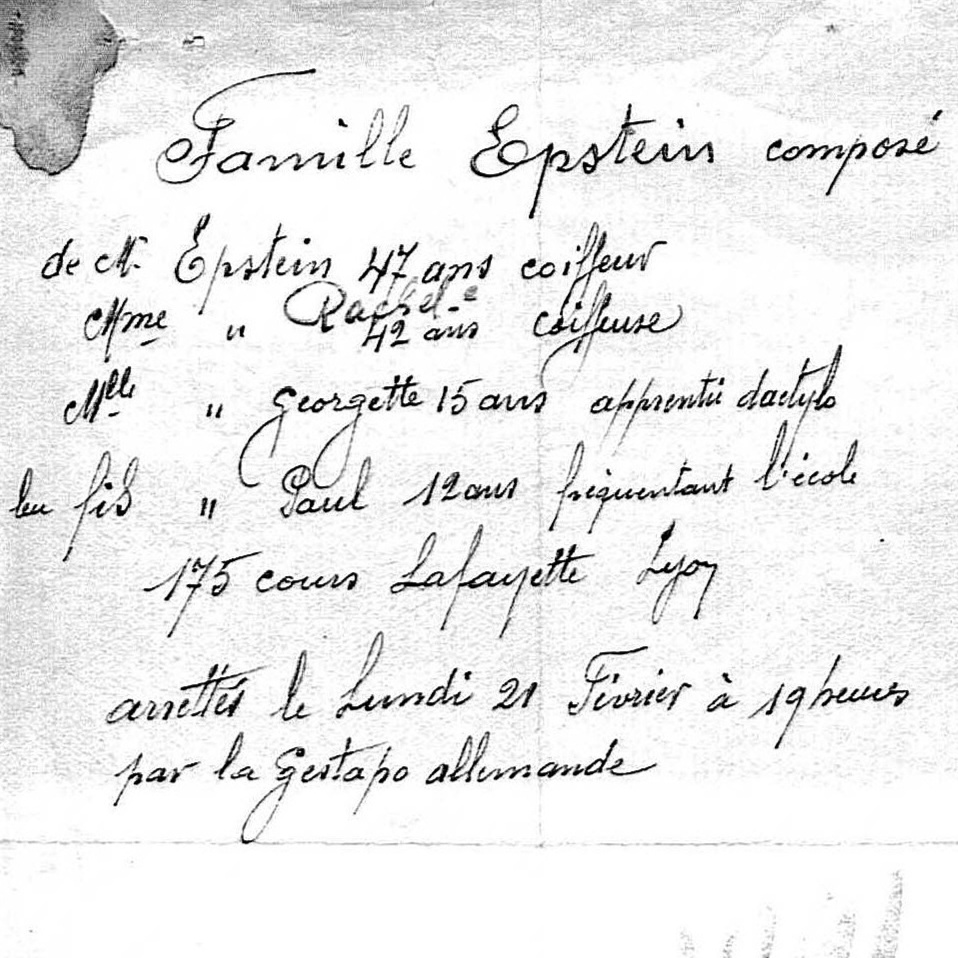

Portrait d’archive
Enfants Epstein Epsztajn
Léopold EPSZTAJN Epstajn Epstein
Nom : EPSTAJN
Prénom(s) : Léopold Lipola Paul David
Date naissance : 21/02/1932
Âge (ans) : 12
Lieu naissance : Lyon
Pays ou département : Rhône
Lieu rassemblement : Lyon
Dernière adresse : 175, Cours Lafayette
Ville : Lyon
Code postal : 69003
N° Convoi : 69
Date déportation : 07/03/1944
Informations diverses : Fils de Abraham Chaskel Epsztajn (11/01/1898, Gidle, Łódź, Poland), confectionneur et de Rela Georgette (née Szylis en 1903 à Konstantynow, Pologne), coiffeuse. Il est le frère de Georgette et était écolier. Ils habitaient au 175 cours Lafayette à Lyon où se trouvait le salon de coiffure de ses parents (il existe toujours aujourd’hui un coiffeur à cette adresse). Les parents de nationalité polonaise sont naturalisés le 12/10/1938.
La famille est arrêtée le 21/02/1944 à 19h à leur domicile par la Gestapo pour “attitude anti-allemande”. Les policiers français qui se sont rendu sur les lieux ont fermé le salon de coiffure et remis les clés à l’horlogerie d’à côté. Transféré à Drancy le 12/04/1944. Déporté avec son père Abraham (11/01/1898, Lodz, Pologne), par le convoi 69 du 07/03/1944. Sa mère Rela est déportée par le convoi 70 du 27/03/1944. La soeur d’Abram fera des recherches en 1946 quant au sort de son frère (Source: Alrosen).
Epsztajn (Léopold, David), né le 21 février 1932 à Lyon (4e) (Rhône), décédé le 12 mars 1944 à Auschwitz (Pologne). JO
Epsztajn (Georgette), née le 11 septembre 1928 à Lyon (5e) (Rhône), décédée le 1er avril 1944 à Auschwitz (Pologne). Epsztajn (Abram, Chaskel), né le 12 janvier 1898 à Gidle (Pologne), décédé le 12 mars 1944 à Auschwitz (Pologne). Epsztajn, née Szylis (Rela) en 1903 à Konstantynow (Pologne), décédée le 1er avril 1944 à Auschwitz (Pologne).
Lieu de déportation : Auschwitz
Lieu de départ : Drancy
Nombre total de déporté·e·s du convoi : 1501
Gazé·e·s à l'arrivée : 1311 (87,3 %)
Survivant·e·s en 1945 : 34 (2,3 %)
Georgette EPSZTAJN Epstajn Epstein
Nom : EPSTAJN EPSTEIN
Prénom(s) : Georgette
Date naissance : 11/09/1928
Âge (ans) : 16
Lieu naissance : Lyon
Pays ou département : Rhône
Lieu rassemblement : Lyon
Dernière adresse : 175, Cours Lafayette
Ville : Lyon
Code postal : 69003
N° Convoi : 70
Date déportation : 27/03/1944
Informations diverses : Fille de Abraham Chaskel Epsztajn (11/01/1898, Gidle, Łódź, Poland), confectionneur et de Rela Georgette (née Szylis en 1903 à Konstantynow, Pologne), coiffeuse. En 1936, la famille habitait à Lyon au 6 rue de l’Oiselière (69009). Georgette était scolarisée à l’Ecole rue Tissot (aujourd’hui Ecole Audrey Hepburn, 69009) de 1934 à 1937. L’année 1936-37 elle était au cours élémentaire 2ème année avec Mme Negond. Georgette sera en suite apprentie dactylo. Ils habitaient ensuite au 175 cours Lafayette à Lyon 3eme où se trouvait le salon de coiffure de ses parents. Les parents de nationalité polonaise sont naturalisés le 12/10/1938.
La famille est arrêtée le 21/02/1944 à 19h à leur domicile par la Gestapo. Les policiers français qui se sont rendu sur les lieux ont fermé le magasin de coiffure et remis les clés à l’horlogerie d’à côté. Déportée avec sa mère EPSZTAJN Rela Rachel née SZYLIS (10-May-1903, Konstantynów, Lublin, Poland), par le convoi 70 du 27/03/1944. Son frère Léopold et son père Abraham seront déportés par le convoi 69 du 07/03/1944.
Epsztajn (Georgette), née le 11 septembre 1928 à Lyon (5e) (Rhône), décédée le 1er avril 1944 à Auschwitz (Pologne). JO
Epsztajn (Léopold, David), né le 21 février 1932 à Lyon (4e) (Rhône), décédé le 12 mars 1944 à Auschwitz (Pologne). Epsztajn (Abram, Chaskel), né le 12 janvier 1898 à Gidle (Pologne), décédé le 12 mars 1944 à Auschwitz (Pologne). Epsztajn, née Szylis (Rela) en 1903 à Konstantynow (Pologne), décédée le 1er avril 1944 à Auschwitz (Pologne). JO
Lieu de déportation : Auschwitz
Lieu de départ : Drancy
Nombre total de déporté·e·s du convoi : 1000
Gazé·e·s à l'arrivée : 480 (48 %)
Survivant·e·s en 1945 : 152 (15,2 %)